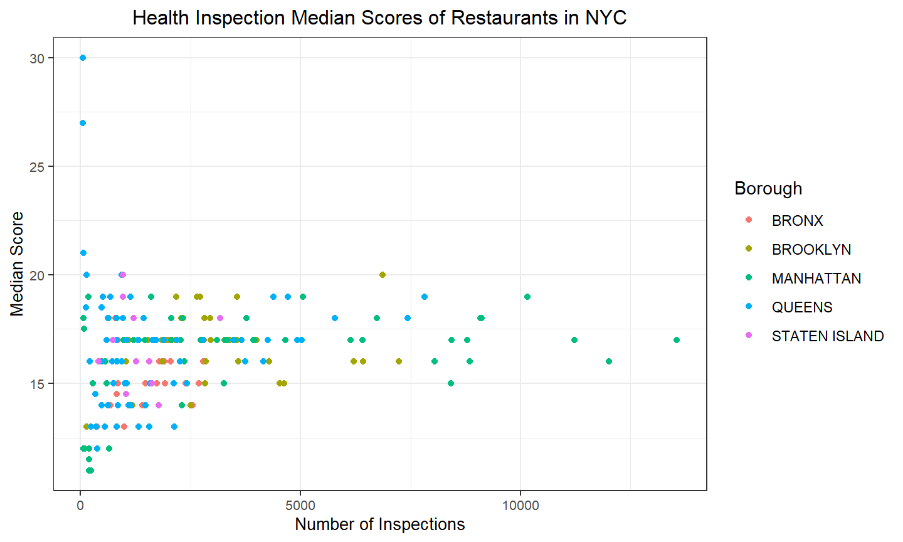
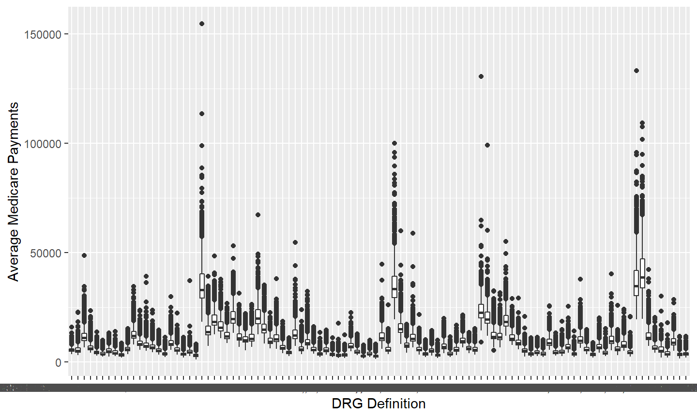

Data visualization is part art and part science. The challenge is to get the art right without getting the science wrong and vice versa. A data visualization first and foremost has to accurately convey the data. It must not mislead or distort. At the same time, a data visualization should be aesthetically pleasing. Good visual presentations tend to enhance the message of the visualization. If a figure contains jarring colors, imbalanced visual elements, or other features that distract, then the viewer will find it harder to inspect the figure and interpret it correctly.
Here are some of the fundameantal design principles for creating informational and appealing data visualizations with examples.
Before start, the following R packages are supposed to be loaded.
library(tidyverse)
library(ggplot2)The principle of proportional ink emphasizes that the sizes of shaded areas in a visualization need to be proportional to the data values they represent. This concept was termed by Bergstrom and West.
In many different visualization scenarios, we represent data values by the extent of a graphical element. For example, in a bar plot, we draw bars that begin at 0 and end at the data value they represent. In this case, the data value is not only encoded in the end point of the bar but also in the height or length of the bar. If we drew a bar that started at a different value than 0, then the length of the bar and the bar endpoint would convey contradicting information.
For example, when we investigate the Relative Age Effect in baseball players who batted during the decade of the 2000s, we can make a bar chart to visualize the birth month distribution.
library(Lahman)
Batting %>%
# Filter players batted during the decade of the 2000s.
filter(yearID %in% 2000:2009) %>%
# Join datasets to get the birth months of the players.
inner_join(Master, by = c("playerID" = "playerID")) %>%
# Calculate the number of players born in each month.
group_by(birthMonth) %>%
summarise(n = n()) %>%
# Create a ggplot.
ggplot() +
# We may set the argument stat in geom_bar as "identity" because the frequency has been calculated.
geom_bar(aes(as.factor(birthMonth),n), stat = "identity", fill = "sky blue") +
# Add another start line, y = 500.
geom_abline(intercept = 500, lty = 2) +
# Add the line chart for the same data
geom_line(aes(x=birthMonth,y=n)) +
xlab("Birth Month") +
ylab("Number of Athletes") +
ggtitle("Distribution of Birth Months in 2000s Decades") +
theme_bw() +
theme(axis.text = element_text(size = 8),
axis.title = element_text(size = 10),
plot.title = element_text(size = 12, hjust = 0.5),
legend.position = "none")The months following August have higher numbers of players than months prior to July, which is clearly shown in the bar chart. So there is a relative age effect in this observed group. But if the start line is 500 instead of 0, things may get exaggerated.
Just focus on the comparison between the numbers of athletes in July and August. When the start line is 0, the number of players born in July is about 2/3 of that in August. However, if the start line is 500, the height of the bar for July above 500 will be 1/2 of that for August, and this will lead to overestimation of the relative age effect.
Therefore, we must always keep in mind that a bar chart should start at 0 to ensure the objectiveness of the comparison.
However, if we are focused on the trend of time series more than value comparison, a line chart will make better sense, which, in my opinion, will be less affected by the start line. But a graphic containing only one line is simple and dull, so I suggest that a line be combined with other lines or other types of charts.
When we want to visualize large or very large datasets, we often experience the challenge that simple x–y scatter plots do not work very well because many points lie on top of each other and partially or fully overlap. And similar problems can arise even in small datasets if data values were recorded with low precision or rounded, such that multiple observations have exactly the same numeric values. The technical term commonly used to describe this situation is “overplotting”, i.e., plotting many points on top of each other.
The essential strategies that we may pursue when encountering this challenge are: partial transparency, logarithmic transform and facet wrap.
Let’s see the Violations data set in the mdsr package contains information reguarding the outcome of health inspections of restaurants in New York City. We calculate the median violation score by zip code for zip codes with 50 or more inspections and want to see the pattern between the number of inspections and the median score for each borough in New York City.
library(mdsr)
g <- Violations %>%
# Remove the records of which the borough is missing.
filter(boro != "Missing") %>%
group_by(boro, zipcode) %>%
# Calculate the number of inspections and the median score.
summarise(inspect_times = n(),
median_score = median(score, na.rm = T)) %>%
# Filter zip codes with 50 or more inspections.
filter(inspect_times >= 50) %>%
# Create a ggplot and set the labs and themes.
ggplot() +
xlab("Number of Inspections") +
ylab("Median Score") +
ggtitle("Health Inspection Median Scores of Restaurants in NYC") +
theme_bw() +
theme(axis.text = element_text(size = 8),
axis.title = element_text(size = 10),
plot.title = element_text(size = 12, hjust = 0.5))
# Draw the basic scatter plot identify each borough by giving it its own color.
g + geom_point(aes(x = inspect_times, y = median_score, col = boro)) + labs(col = "Borough")
You may find that the scatter plot above has many overlapping points in the interval between 0 inspections to 5000. Even though the points are colored, it is still hard to tell different boroughs in the plot. So we may improve this graphic as follow.
g +
# First, we may adjust the transparency of the points by set alpha to 0.5.
geom_point(aes(x = inspect_times, y = median_score, col = boro, alpha = .5)) +
xlab("Log10 Number of Inspections") +
# Second, we can rescale the number of inspections by logarithmic calculation.
scale_x_continuous(trans = "log10") +
# Finally, we can facet wrap to separate the boroughs.
facet_wrap(~boro, nrow = 2) +
theme(legend.position = "none")A data visualization is not a piece of art meant to be looked at only for its aesthetically pleasing features. Instead, its purpose is to convey information and make a point. To reliably achieve this goal when preparing visualizations, we have to place the data into context and provide accompanying titles and other annotations.
One critical component of every figure is the figure title. Every figure needs the title. The job of the title is to accurately convey to the reader what the figure is about, what point it makes.
Axis and legend titles and labels explain what the displayed data values are and how they map to plot aesthetics. There are cases, however, when axis or legend titles can be omitted, namely when the labels themselves are fully explanatory. For example, a legend showing two differently colored dots labeled “female” and “male” clearly indicates that color encodes sex, then title “sex” is not required to clarify this fact.
Apart from the content, we must also keep the visual readability of the graphic by setting size, angle, and so on in the themes.
Let’s make a single plot with boxplots of the average medicare payments by DRG code.
library(readr)
# Load the original DRG data set.
DRG <- read_csv("files/DRG_data.csv")
# Draw the simplist (and the ugliest) boxplot.
DRG %>%
ggplot(aes(x = `DRG Definition`, y = `Average Medicare Payments`)) +
geom_boxplot()
You may find that there are so many outliers for each DRG that the boxes are compressed. Besides, the content on the x-axis is not readable because of the massive overlap. So we may improve this graphic as follow.
# Create the variable DRG.code to simplify DRG Definition.
DRG <- DRG %>%
mutate(DRG.code = substr(`DRG Definition`,1,3)) %>%
select(DRG.code, everything())
# Improve this graphic!
DRG %>%
ggplot() +
# Set DRG.code as x instead of DRG Definition. Omit the outliers by set outlier.shape to NA.
geom_boxplot(aes(x = DRG.code, y = `Average Medicare Payments`), outlier.shape = NA) +
# Rescale y to spread the boxplots.
scale_y_continuous(trans = "log10") +
xlab("DRG Code") +
ylab("Average Medicare Payments ($)") +
ggtitle("Average Medicare Payments by DRG codes") +
theme_bw() +
# Set the particular size and angle for the x-axis to avoid overlap.
theme(axis.text.x = element_text(size = 6, angle = 90),
axis.text.y = element_text(size = 8),
axis.title = element_text(size = 10),
plot.title = element_text(size = 12, hjust = .5))Color can be an incredibly effective tool to enhance data visualizations. At the same time, poor color choices can ruin an otherwise excellent visualization. Color needs to be applied to serve a purpose, it must be clear, and it must not distract.
One common mistake is trying to give color a job that is too big for it to handle, by encoding too many different items in different colors. As a rule of thumb, qualitative color scales work best when there are three to five different categories that need to be colored. Once we reach eight to ten different categories or more, the task of matching colors to categories becomes too burdensome to be useful, even if the colors remain sufficiently different to be distinguishable in principle.
Reading the news that Ireland becomes world’s first country to divest from fossil fuels, we want to explore how do we measure “green-ness” of country when we rank them in general with the Environmental Performance Index page with ranking table.
So let’s make the simple plot of Environmental Health vs Ecosystem Vitality first.
library(knitr)
library(rvest)
epi_2018_site <- read_html("https://epi.envirocenter.yale.edu/epi-topline")
epi_2018_df <- epi_2018_site %>% html_table() %>% as.data.frame()
epi_2018_df %>% ggplot(aes(x=Environmental.Health , y= Ecosystem.Vitality)) +
geom_point(aes(color=Country)) +
theme_bw() +
theme(legend.position = "none",
axis.text.y = element_text(size = 8),
axis.title = element_text(size = 10),
plot.title = element_text(size = 12, hjust = .5)) +
labs(title = "Environmental Health vs Ecosystem Vitality",
x = "Rises with Economic Growth & Prosperity",
y = "Comes Under Strain from Industrialization & Urbanization")You may find that there are too manu colors in the graphic but actually this does not make sense. Then we may make the improvement.
epi_2018_df <- epi_2018_df %>%
# Switch countries to continents.
mutate(continent = countrycode(Country ,"country.name", "continent", warn=F)) %>%
arrange(EPI.Ranking)
epi_2018_df %>%
ggplot(aes(x=Environmental.Health , y= Ecosystem.Vitality)) +
# Color by continent.
geom_point(aes(color = continent)) +
# Add smooth line to show the association.
geom_smooth(method="lm", se=F, color = "black") +
theme_bw() +
theme(legend.position = "none",
axis.text.y = element_text(size = 8),
axis.title = element_text(size = 10),
plot.title = element_text(size = 12, hjust = .5)) +
labs(title = "Environmental Health vs Ecosystem Vitality",
x = "Rises with Economic Growth & Prosperity",
y = "Ecosystem Vitality") +
# Add repels to label better.
geom_text_repel(aes(label=paste0(EPI.Ranking,".",Country)),
data = . %>%
filter(EPI.Ranking<=10|EPI.Ranking>=170|Country %in%
c("Canada","United States of America","Japan","Ireland")),
size = 3, color = "darkgrey")To learn more about the color palettes in R, you may refer to colorPaletteCheatsheet
Fundamentals of Data Visualization https://serialmentor.com/dataviz/color-pitfalls.html
Environmental Performance Index – Simple Scatter Plot https://www.r-bloggers.com/environmental-performance-index-simple-scatter-plot/